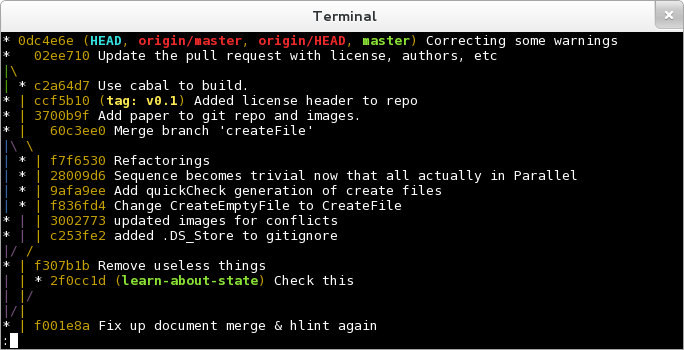

Using Git: An Overview for Comp 20
Hashem Nasarat
February 4, 2013
What is git?
- Git: Version Control System (VCS)
- Distributed: Lives on more than one computer
- Keeps track of snapshots of a directory: [VCS] repository = files + history
- Free software
- Really complex (300,000 lines of code, written in C, Bash, and Perl)
- Really useful (helps keep track of what you do, so you make fewer mistakes)
- Started by the Linus Torvals, who also started the Linux kernel
- Git
 GitHub, though Git’s code is available there.
GitHub, though Git’s code is available there.
Git: Local Repository Only
Basic Usage (local repository)
git init – Create a repository
repo files
___
[ ] *
[___]
git add – I want you to record the state of the following files
___
[ * ]
[___]
git commit – Actually do it. (And attach a message describing changes)
__________________
[ * (HEAD) message ]
[__________________]
Basic Usage (local repository)
___________________
[ * (HEAD) message3 ]
[ * message2 ]
[ * message ]
[___________________]
Git: Local and Remote Repositories
Basic Usage (local + remote repository)
- Git repositories can be synchronized between multiple local and multiple remote computers (e.g. your laptop, halligan, and GitHub).
- A repository’s
.git/config file has details
- Default remote name is
origin
- GitHub offers public remote repositories
- Local and remote repositories has benefits:
- Work on stuff without an Internet connection
- Work on a project from different computers
- Added complexity:
- Manually keep changes synchronized.
- Combining some changes requires intervention (a conflict)
Remote: Initial State
- Empty remote, new repository
local remote
(laptop) (GitHub)
____ ____
[ * ] [ ]
[ * ] [ ]
[ * ] [ ]
[____] [____]
Remote: Updating the remote
- Update the remote with local changes with
git push
local remote
(laptop) (GitHub)
____ push ____
[ * ] -----> [ * ]
[ * ] [ * ]
[ * ] [ * ]
[____] [____]
Remote: Creating a new local
- Download an entire remote repository to a new local copy with
git clone
local remote local
(laptop) (GitHub) (halligan)
____ ____ clone ____
[ * ] [ * ] ------> [ * ]
[ * ] [ * ] [ * ]
[ * ] [ * ] [ * ]
[____] [____] [____]
Remote: Updating the local
- Update local repositories with remote changes with
git pull
local remote local
(laptop) (GitHub) (halligan)
____ ____ ____
[ * ] (push) [ * ] pull [ * ]
[ * ] -----> [ * ] ------> [ * ]
[ * ] [ * ] [ * ]
[ * ] [ * ] [ * ]
[____] [____] [____]
git pull is usually bad form. Use git pull --rebase- Read this article for more info.
Interlude: Setting up GitHub User Pages
- User pages: a GitHub feature that exposes a specific repository in your account as a website.
- Email account must be verified.
- Repository must be named: username
.github.com
- 10 minutes needed before the page will load
- If you can’t get it to work, delete the repo and recreate it.
- E.g. My GitHub username is hnasar. My “User Pages” repository is called
hnasar.github.com, and it’s accessible here
Viewing a Repository 1
gitk --all
- available on halligan, Ubuntu/Debian, homebrew
Viewing a Repository 2
git log --graph --oneline --all --decorate- mnemonic: (git log g.o.a.d.), goad, meaning it’s annoying to type all that
- (Shortcut:
Ctrl + r, then start typing git log --graph …)
- 
What next?
- Lots of potential topics. What are you interested in?
- Committing and good commit style
- Undoing commits and fixing things
- Working with branches
- GitHub forking and pull requests
- Time travel
- Questions from the audience
Committing and Good Commit Style
Adding and Committing
- Commits are the basic unit of a repository
- Mark a new state of files at a point in time
- Commit message message indicates to viewers what the changes in the commit did.
- (Use
git diff to see what was changed from the last commit)
- 2-part command
git add <path[s]> – record these changes in the next commitgit commit – make the commit, and add a message
- (try
git add -p to select exactly which changes within files are added)
- Before a commit is made,
git reset (without any arguments!) will undo git add
git commit (with no arguments) will open vim. To save and quit, type :wq
Commit Style
- A good commit will contain only the changes necessary to some new feature of a repository.
E.g. If the feature is: “ensure all img tags have an alt attribute”, a good commit will add alt tags for every img in one go, and NOT create a new commit for every changed img tag, or every file that I change things in.
- Good commit message form:
- Feature in present tense
- One blank line
- Explanation/reasoning of changes
Add alt attribute to every img
As per Section 508 Amendment to the Rehabilitation Act of 1973
and the HTML 5 specification, every img should have an alt
attribute which "provides equivalent content for those who
cannot process images or who have image loading disabled".
Undoing Commits and Fixing Things
Git reset
git reset --hard <commit>
- DANGEROUS – you will lose any uncommitted changes
- used to undo commits
- Moves branch label, and HEAD to commit specified
Git reset example
* 31a3f57 (HEAD, master) Third commit
* 20ea82d Second commit
* 9ef5cfb First commit
Git reset example
* 20ea82d (HEAD, master) Second commit
* 9ef5cfb First commit
Un-undoing Commits
- Commits are only truly deleted after a given time passes (several days)
git reflog
- displays most recent commits which have been HEAD
20ea82d HEAD@{0}: reset: moving to HEAD~1
31a3f57 HEAD@{1}: checkout: moving from 20ea82d to master
20ea82d HEAD@{2}: checkout: moving from master to HEAD~1
31a3f57 HEAD@{3}: commit: Third commit
20ea82d HEAD@{4}: commit: Second commit
9ef5cfb HEAD@{5}: commit (initial): First commit
Un-undoing Commits
* 31a3f57 (HEAD, master) Third commit
* 20ea82d Second commit
* 9ef5cfb First commit
Working with Branches
Branches
- Branches allow multiple lines of commits, which may be dealing with differing features, to not overlap (which might cause confusion).
- A branch is a label attached to a commit.
- Default branch name is
master
- View branches (including the current one) with
git branch -a
* 7a0fc15 Patch.hs: Fix incorrect editsToChangeHunks offsets
* e564f63 Make the type of Edit more general.
* | 0bbe999 Implements applyPatch
* | b6d7003 Implements sequencePatches
|/
* 6f2a864 Paralell patch changes
Using Branches
- Create a branch with
git branch <branch-name>
- Delete a branch with
git branch -d <branch-name>
- Switch branches with
git checkout <branch-name>
- When you commit, the new commit’s parent is the tip of the current branch, and the branch will now point to the new commit.
- A successful Git branching model
Combining Branches
git merge <branch to merge in>
- Produces a commit with multiple parents
* ca5ac46 Merge branch 'master' of github.com:jmont/nor
|\
| * 7a0fc15 Patch.hs: Fix incorrect editsToChangeHunks offsets
| * e564f63 Make the type of Edit more general.
* | 0bbe999 Implements applyPatch
* | b6d7003 Implements sequencePatches
|/
* 6f2a864 Paralell patch changes
git rebase <branch to rebase onto>
- Removes the branch by making the branch’s commits stem from the end of the other.
* 7a0fc15 Patch.hs: Fix incorrect editsToChangeHunks offsets
* e564f63 Make the type of Edit more general.
* 0bbe999 Implements applyPatch
* b6d7003 Implements sequencePatches
* 6f2a864 Paralell patch changes
Conflicts
- Git is smart about what lines changed in which files in a commit
- Some commits indicate contradicting changes.
- If git can’t figure it out, it writes both version the file, complains of a conflict and tells you to fix it.
- Make the file look how you want, then do
git add . and git commit
GitHub Forking and Pull Requests
GitHub: Forking
- GitHub “Forking” is something GitHub invented (not a part of git)
- GitHub “Forking” is a way to copy a remote git repo from one GitHub user to another.
- “fork” typically means taking an existing project, and developing it in a new direction. This is what happened when LibreOffice forked from OpenOffice and Ubuntu from Debian.
remote remote
tuftsdev/ hnasar/
running-dogs running-dogs
____ ____
[ * ] fork [ * ]
[ * ] -----> [ * ]
[ * ] [ * ]
[____] [____]
GitHub: Pull Request
- Typically, free software software developers share patches (modifications to code, try
git format-patch <commit>) via email or posting on websites.
- GitHub created a notion of a “Pull Request” to easily allow GitHub “Forked” projects to collaborate in a similar fashion as sharing patches.
- Good explanation
- Pull Requests must be accepted by the recipient.
remote remote
tuftsdev/ hnasar/
running-dogs running-dogs
____ ____
[_*__] <------ [ * ]
[ * ] pull [ * ]
[ * ] request [ * ]
[ * ] [ * ]
[____] [____]
Time Travel
Checkout & Blame
- checkout moves HEAD (the current commit, and the corresponding state of the files)
- (remember
git log --graph --oneline --all --decorate)
git checkout <commit-hash> (e.g. git checkout 0dc4e6e)
- ‘detached HEAD’ state, which means HEAD isn’t on a branch
git checkout a branch to “reattach” the HEAD
git blame <file> to see when and who last made changes to a part of a file.
git show <commit> displays the contents of a given commit.
End
- Unclear?
- Did I miss something?